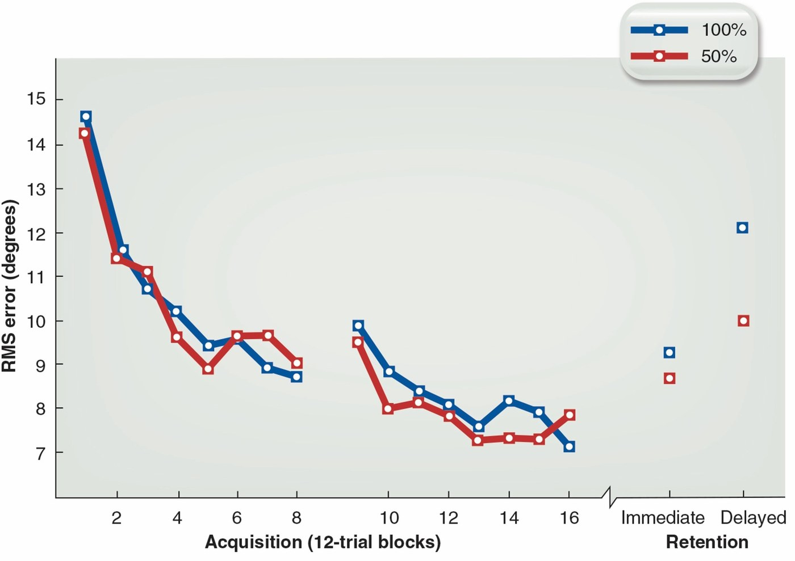

How Much Feedback to Give?
The guidance hypothesis warned that too much feedback backfires. So what’s the right amount — and how do you dial it back?
By the end of this lesson you will be able to…
- 1Contrast the traditional and contemporary views on feedback frequency.
- 2Describe four ways to reduce feedback: faded, bandwidth, summary, and self-selected.
- 3Interpret the classic studies behind each (Winstein & Schmidt, Smith, Schmidt et al.).
- 4Explain why reducing feedback often improves learning.
How often should a learner get feedback?
Imagine you’re teaching someone a brand-new motor skill. To help them learn it as well as possible for the long run, when should you give them augmented feedback?
Make your best guess to continue — there’s no penalty for being wrong.
How often should feedback come?
For decades, the answer seemed obvious. But the research flipped it:
Every trial (100%)
Give feedback after every attempt — the assumption was that no learning happened on trials without it.
Less is often more
Modern research supports reducing the frequency of augmented feedback — consistent with the guidance hypothesis.
If too-frequent feedback creates dependency, then giving less should force the learner to build their own error-detection — and learn more durably. The studies ahead test exactly that.
100% vs. 50% feedback
Winstein & Schmidt (1990) had people practice moving a lever along a specified trajectory. Two groups differed only in how often they got KR about their error:
- 100%KR after every trial.
- 50%KR after half the trials.
Predict: on a later retention test — where no augmented feedback was provided — which group performed better?
Make a prediction to continue.
Winstein, C. J., & Schmidt, R. A. (1990). Reduced frequency of knowledge of results enhances motor skill learning. Journal of Experimental Psychology: Learning, Memory, and Cognition, 16(4), 677–691. View study →
Similar in practice — but 50% retained better
During acquisition, the two groups looked nearly identical. The difference showed up where it counts: on the delayed retention test a day later (with no augmented feedback), the 50% group had clearly lower error.

Takeaway: less frequent KR produced better long-term learning of this task.
Winstein, C. J., & Schmidt, R. A. (1990). Reduced frequency of knowledge of results enhances motor skill learning. Journal of Experimental Psychology: Learning, Memory, and Cognition, 16(4), 677–691. View study →
Four ways to reduce feedback
“Give less” is the principle — but how you reduce it matters. Flip each card to see the strategy. Flip all four to continue.
Flip all four cards to continue.
Faded feedback
Give feedback at high frequency early in practice — when the learner needs guidance toward the goal — then gradually reduce it as skill develops.
Clinical example
A PT teaching a post-op patient to walk gives cues on nearly every step at first (“heel first… now push off”), then cues every few steps, then only occasionally — until the patient walks the hallway unaided.
Everyday / sport example
A driving instructor comments on every turn during the first lessons, then only on the tricky ones, then goes mostly silent — letting the new driver read the road themselves.
Because you control the fade, you can tune it to each learner — taper faster for someone progressing quickly, slower for someone who still needs support.
Bandwidth feedback
Set an acceptable range around the goal. If performance lands inside the band, say nothing — the learner reads silence as “good enough.” Only when performance falls outside do you give precise feedback about the error.
Try it. A patient is learning to squeeze a handgrip dynamometer to a target of 50 N — not too hard, not too soft. Each dot is one squeeze (one trial). Adjust the acceptable band and watch which squeezes trigger feedback:
Drag the slider from a tight band to a wide one. Notice how a wider band means fewer squeezes trigger feedback — the learner is left to self-correct on the “good enough” ones. Try both extremes to continue.
Bandwidth in action: golf putting
Smith et al. (1997) had novices practice a golf shot to a target 10 m away, with vision occluded so they had to rely on augmented feedback. Three groups differed in how wide their “acceptable” band was:
- 0%KP about form on every trial (no band).
- 5%KP only if they missed by more than 0.5 m.
- 10%KP only if they missed by more than 1 m (widest band).
Smith, P. J., Taylor, S. J., & Withers, K. (1997). Applying bandwidth feedback scheduling to a golf shot. Research Quarterly for Exercise and Sport, 68(3), 215–221. View study →
Why bandwidth feedback works
Open all three to continue.
Open all three to continue.
Summary & averaged feedback
Summary feedback withholds feedback across a series of trials, then delivers it for the whole series at once.
Say the learner does 5 trials:
Summary
Afterward, they see a graph of their error on each of the 5 trials — the full pattern at once.
Averaged
A variant: they see the average error across the 5 trials — a single summary number.
Either way, the learner gets no trial-by-trial crutch — they have to perform the whole block relying on their own senses.
How long should a summary be?
Schmidt et al. (1989) had people learn a timed lever-movement task, giving KR summarized after different numbers of trials: every trial (Sum 1), every 5, 10, or 15 (Sum 15).
Schmidt, R. A., Young, D. E., Swinnen, S., & Shapiro, D. C. (1989). Summary knowledge of results for skill acquisition: Support for the guidance hypothesis. Journal of Experimental Psychology: Learning, Memory, and Cognition, 15(2), 352–359. View study →
Why summary feedback works — and how long
It shares the same logic as the other methods, with its own twist:
- •It may prevent the dependency that too-frequent feedback creates.
- •It makes processing feedback more cognitively challenging — pushing learners to analyze their own movement-produced feedback and detect their own errors.
The optimal summary length depends on the skill. For simpler skills, longer summaries (less frequent feedback) tend to work better. For more complex skills, shorter summaries help — the learner needs more frequent anchoring.
Self-selected frequency
The last method hands the decision to the learner: let them choose when they receive feedback. Giving learners this kind of autonomy over their feedback reliably benefits learning (Wulf, 2007; Wulf & Lewthwaite, 2016).
You saw this as the direct motivational role of feedback. Here it doubles as a frequency-reduction method — learners who control their own feedback tend to ask for it less often than a 100% schedule, and they request it after trials they judge as good.
Wulf, G., & Lewthwaite, R. (2016). Optimizing performance through intrinsic motivation and attention for learning: The OPTIMAL theory of motor learning. Psychonomic Bulletin & Review, 23, 1382–1414. View study →
All four share one logic
Faded, bandwidth, summary, self-selected — they look different, but each does the same essential thing:
They reduce the learner’s reliance on augmented feedback, forcing them to process their own intrinsic feedback and build durable error-detection.
That’s the guidance hypothesis turned into practice. The feedback that felt helpful on every trial was preventing the learner from doing the very work that makes skill last.
“Less feedback” isn’t universal — complex skills and early novices often need more support at first. The art is matching the reduction to the learner and the task.
A therapist wants a patient to stop relying on constant cueing during a reaching task. She decides to give feedback only when the reach misses the target by more than a set margin — staying silent when it’s close enough. Which reduction method is this?
Answer to continue.
What you can now do
- 1Explain why the contemporary view favors reducing feedback frequency (Winstein & Schmidt).
- 2Describe faded, bandwidth, summary/averaged, and self-selected feedback.
- 3Interpret the bandwidth (Smith) and summary (Schmidt) studies.
- 4Explain the shared logic: reducing dependency builds durable error-detection.
You now know how much feedback to give. Lesson 4 tackles the last practical questions: KP vs. KR, error vs. correct information, precision, and video feedback.
Return to Canvas for this week’s lab and discussion.